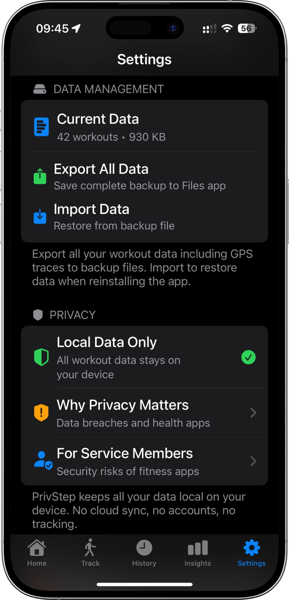
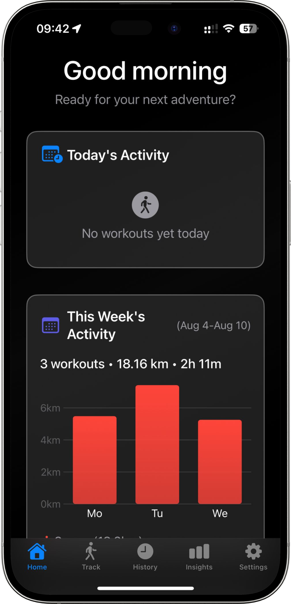
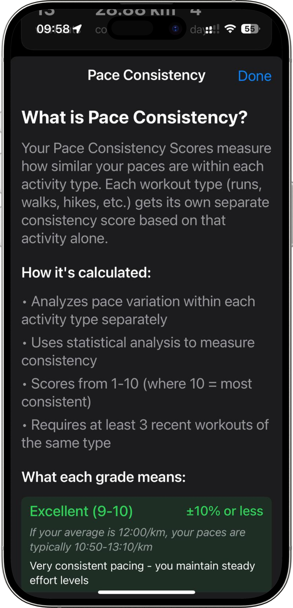
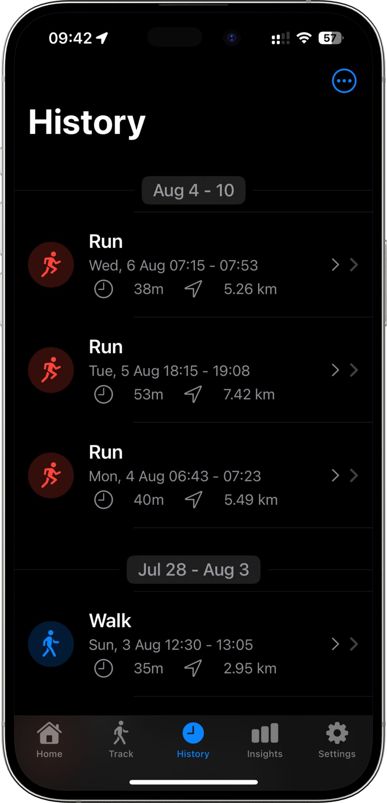
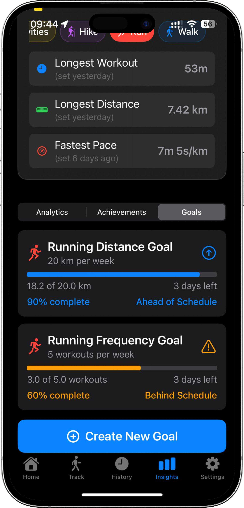
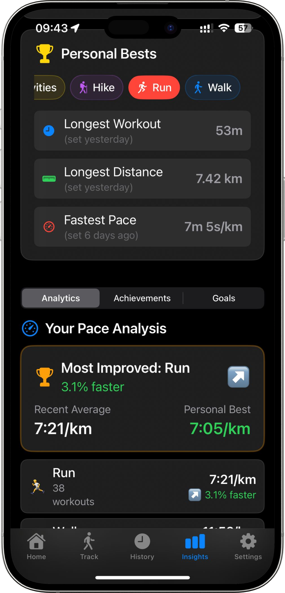

PrivStep Screenshots
×
Stylized Map View
Live tracking with beautiful stylized map visualization in Central Park

Privacy Settings
Complete control over your data - all stored locally

Home Dashboard
Weekly activity summary and motivational insights

Pace Consistency Analytics
Detailed explanation of pace consistency scoring and how it helps improve your running

Workout History
Complete history of all your workouts with detailed metrics and easy navigation

Goal Tracking
Set and track weekly running goals with visual progress indicators and achievement status

Personal Bests
Track your achievements and analyze pace improvements with detailed performance analytics

Workout Analysis
Complete post-workout analysis with satellite map view, personal records, and detailed performance metrics